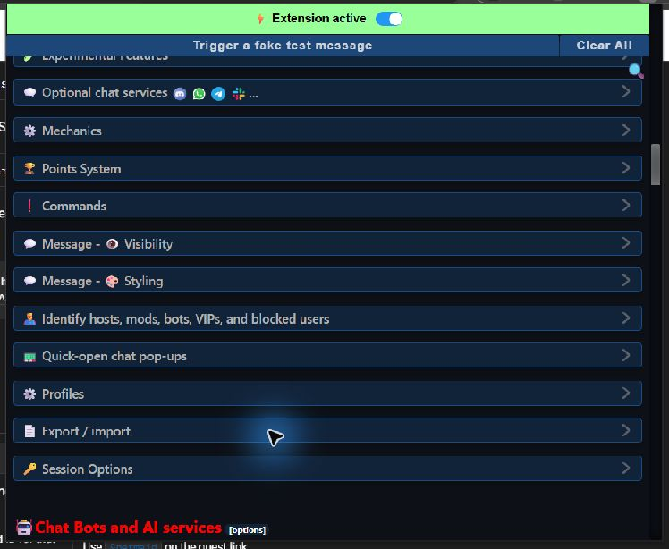
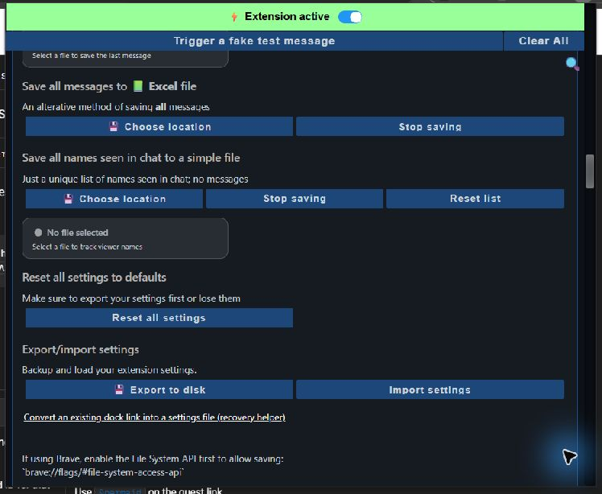
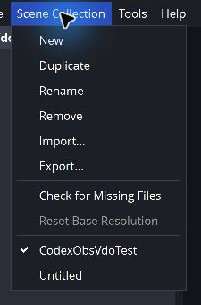
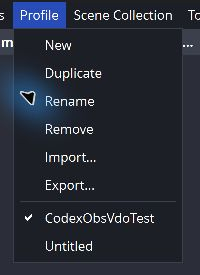

Éléments à exporter
Pour un bip de don inattendu, commencez par ces deux fichiers :
- Paramètres Social Stream Ninja : montre les options activées et les liens générés.
- Collection de scènes OBS : montre les scènes, sources navigateur, sources multimédias, URL des sources et sources audio globales.
Un profil OBS n'est généralement pas nécessaire pour un bip de source navigateur. Exportez-le uniquement si l'assistance demande les paramètres de sortie, de vidéo ou de compte.
Gardez les exports privés. Ils peuvent contenir des mots de passe de session, des URL de webhooks et de sources, des détails de comptes connectés ou une clé de diffusion. Envoyez-les uniquement à la personne qui examine le problème, jamais dans un chat ou forum public.
1. Exporter les paramètres Social Stream Ninja
- Ouvrez le panneau de contrôle Social Stream Ninja.
- Faites défiler jusqu'à Paramètres et outils globaux.
- Si vous êtes déjà près du bas de la page, sélectionnez le lien ACCÉDER à côté de « Looking for the Global settings? » pour y accéder.
- Dans les paramètres globaux, trouvez et sélectionnez Exporter / importer (Export / import).

- Faites défiler la section développée jusqu'à voir Paramètres d'exportation/importation (Export/import settings).
- Sélectionnez Exporter sur le disque (Export to disk).
- Choisissez où enregistrer le fichier et donnez-lui le nom souhaité. Conservez l'extension .data .
- Sélectionnez Enregistrer, puis envoyez ce fichier de paramètres en privé à l'assistance sans le modifier.

2. Exporter la collection de scènes OBS
- Dans OBS, passez à la collection de scènes utilisée lorsque le problème survient.
- Sélectionnez Collection de scènes dans le menu supérieur.
- Sélectionnez Exporter… (Export...), choisissez un dossier et enregistrez le fichier JSON.
- Si le problème survient dans plusieurs collections, exportez chaque collection concernée.

3. Exporter le profil OBS uniquement sur demande
- Passez au profil OBS concerné.
- Sélectionnez Profil dans le menu supérieur.
- Sélectionnez Exporter… (Export...), choisissez un dossier et enregistrez le fichier JSON.

Un profil peut contenir des informations de comptes connectés ou de clé de diffusion. Partagez-le en privé et uniquement lorsque c'est nécessaire.
Envoyer le dossier à l'assistance
Joignez le fichier de paramètres Social Stream Ninja (.data) et le JSON de collection de scènes OBS. Indiquez également le nom de la plateforme de dons et l'heure approximative à laquelle le son s'est produit.
Si le problème est difficile à reproduire, une courte vidéo avec un don est utile. Incluez le JSON du profil OBS uniquement si l'assistance le demande expressément.